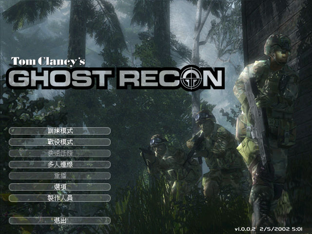
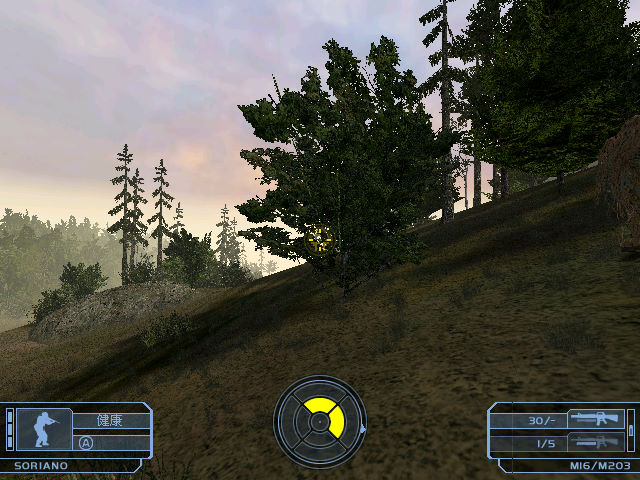

名稱：火線獵殺／幽靈行動 (Tom Clancy's Ghost Recon，繁中／簡中／英文版)
簡介：Red Storm 2001年出品的即時戰術第一人稱射擊遊戲，由Ubisoft代理發行。2002年推
出「荒漠危城／沙漠之鷹（Desert Siege）」資料片，2003年推出「古巴風雲／古巴
風暴／石破天驚（Island Thunder）」資料片 [待補]。


保護：英文版為光碟SafeDisc 2.51；繁中版為光碟SafeDisc 2.60；簡中版主程式為光碟，
資料片無保護，破解碼：
GhostRecon.exe
74 0F FE C3 80 FB 5A
EB -- -- -- -- -- --
備註：VirtualBox無法正常執行，虛擬機請使用VMware。
備註：中文主程式為1.0.0.2版，安裝資料片1後升為1.2.10版，安裝資料片2後升為1.4.0版。
備註：繁中／簡中版兩個資料片不可同時安裝，否則文字顯示會亂掉（英文版無此一問題）。
檔案：GR_Patch_4.rar = 1.4.0英文資料片2更新檔
nocd1002_chs.rar = 簡中1.0.0.2免光碟檔
nocd1210_ch.rar = 繁中/簡中1.2.10免光碟檔
nocd1210_eng.rar = 英文1.2.10免光碟檔
nocd1400_ch.rar = 繁中/簡中1.4.0免光碟檔
nocd1400_eng.rar = 英文1.4.0免光碟檔